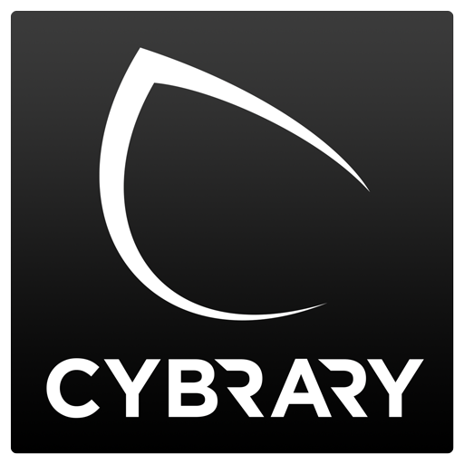

Education
I graduated with a B.Sc in Information Science from the University of Maryland, College Park, completing my degree in just three years—a testament to my dedication and ability to thrive under pressure. My curriculum was rich with a variety of foundational and advanced topics, from Network Architecture and Database Design to the critical aspects of Big Data ethics. Additionally, my coursework in Privacy, Security, and Ethics in Big Data further solidified my understanding of the security challenges and ethical considerations in today’s digital landscape. I also deepened my technical toolkit through courses in Dynamic Web Applications and Object-Oriented Programming, which have been crucial in honing my coding and software development skills. By applying these principles in real-world projects, I've been able to effectively bridge the gap between theoretical concepts and practical application.
-
Clubs and Involvement
During my education I joined the Sigma Chi fraternity in order to make connections and professional relationships, with access to a wide range of alumni resources. I served as the President of Risk Management on the IFC Greek Commmunity Council.
Certifications 

-
CompTIA Security+ — Certified July 2023
Earned the CompTIA Security+ certification, demonstrating knowledge in network security, compliance, operational security, threats and vulnerabilities, data and host security, access control, identity management, and cryptography.
-
Cisco Certified Network Associate (CCNA) — Certified July 2024
Achieved CCNA certification, affirming my abilities to install, configure, and troubleshoot medium-size routed and switched networks.
Visit my Credly Profile
IT Support Specialist | Bolton Partners | May 2024 – Present
At Bolton Partners, I provide critical support as an IT Support Specialist, handling daily help desk operations, troubleshooting network and system issues, and ensuring seamless technology usage for all employees within our Azure environment. I manage users and groups within Active Directory, configuring permissions and access to optimize security and efficiency. Additionally, I lead security awareness training initiatives using PhishER to educate staff on best practices, reducing the company’s risk of cyber threats. My role allows me to continuously develop my technical expertise while ensuring the company’s technology infrastructure runs smoothly.
Intern to Cybersecurity Content Developer | Cybrary | Nov 2022 – Apr 2024
At Cybrary, I had the opportunity to grow from an IT intern into a full-fledged contracting role. As an intern, I gained foundational experience by conducting meticulous research on emerging trends in cybersecurity, improving course content, and advancing the student learning resources. This role was crucial in obtaining my Security +. Transitioning into the contract role, I took on more responsibility, managing help desk tickets for the site and collaborating with cross-functional teams to optimize our systems . Using tools like Atlassian ServiceDesk, I ensured smooth operations across the organization while resolving technical issues in a timely manner. My time at Cybrary strengthened my troubleshooting skills, enhanced my ability to work in a fast-paced environment, and developed my passion for security.